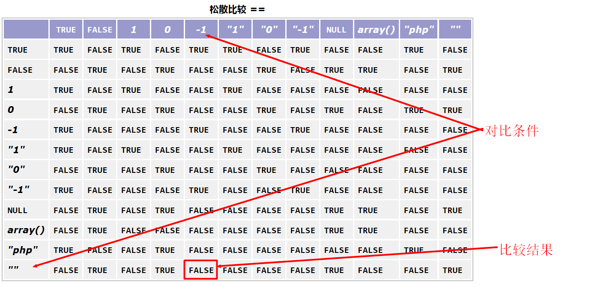
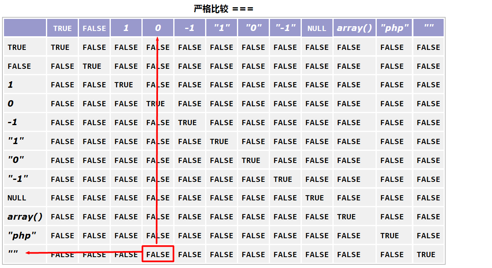
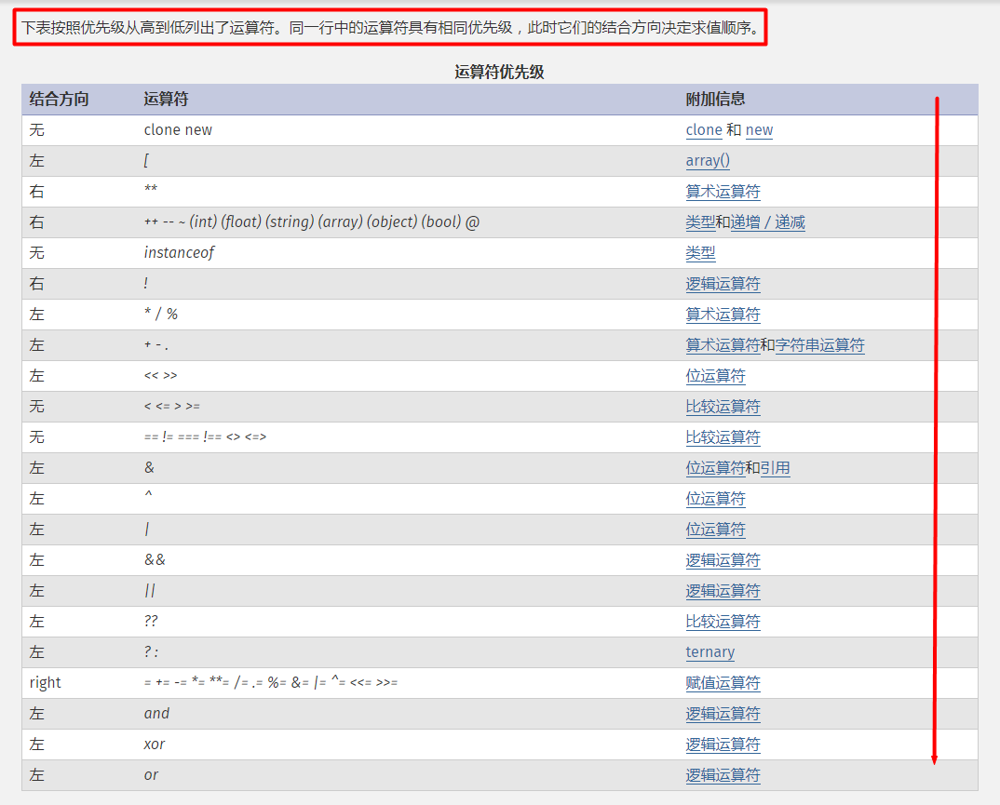

PHP基础知识
思考：PHP是一种运行在服务器端的脚本语言，可以嵌入到HTML中开发。也就是说混入到HTML中（还有CSS和JavaScript）的PHP代码要被PHP解释器“取出来”，然后转变成HTML，最后才能交给浏览器去解析。那么，PHP解释器凭什么能够从一堆“乱七八糟”代码中准确识别PHP部分呢？
引入：混到一块的内容要加以区分，必须要有一个不同于其他内容的规则，而PHP的代码本身无法做到，因此需要有一个类似JavaScript的标签来区分，然后可以将PHP的代码逻辑写到指定的标签内，就可以实现PHP的独立识别了。
PHP标签【掌握】
定义：PHP标记是一种不对称的双标记，而且可以根据实际所处的位置变成必要的不完整标记。PHP解释器会将从标记开始，将标记内的所有内容当做PHP的代码来解析。
1.标记规则：标准规则，通常是嵌入到HTML中的时候使用
<?php
//标记起始为：<?php
//PHP代码块
//标记结束为：?>
?>
2.标记规则：不完整规则，通常是独立的PHP文件（全部是PHP代码）使用
<?php
//只有起始标记
//PHP代码块
//没有结束标记
3.标记规则：历史规则，PHP在早起经历了多种标记，现在已经几乎都不用，但是如果碰到，要认识
短标记：short_tag
<?
//短标记：起始标记没有PHP
//目前默认不支持，如果要支持需要开启配置php.ini：short_open_tag = On
?>
*********************************************************************
ASP标记：asp_tag
<%
//ASP标记：以前ASP语言的方式
//PHP7已经明确不支持
%>
*********************************************************************
脚本标记
<script language="php">
//脚本标记：与JavaScript一样
</script>
总结：PHP因为其语言特殊性，需要使用标记来人为的区分，因此必须使用PHP所对应的标记。标记的主要方式有两种：
- 嵌入到HTML中：必须使用起始和结束标记
- 独立PHP文件：使用起始标记即可
思考：代码一旦写起来一来会随着业务复杂度的上升而变得多而复杂，二来项目的开发通常需要与团队共享代码，三来会因为团队人员的变更而导致不同的人去更新别人的代码。那么这个时候就会出现一个效率问题：为了能够去完善代码，个人可能需要去读懂全部代码才知道如何下手，这样的效率通常会不如完全重新开发一套系统，如何解决？
引入：想要让代码的可读性变强，可扩展性变强，就需要对代码的逻辑、针对的业务、设计的关联等做出明确的说明，这种说明就是代码中所常用的文字描述，俗称注释。而这种描述本身会在代码被解析的时候自动忽略掉，因此只会方便写代码和读代码的人，而不会额外的给程序本身增加任何压力。
PHP注释【掌握】
定义：注释，为了方便程序的迭代开发和管理，使用特定的符号将描述的自然语言进行标记，方便开发人员理解代码并不会给程序本身增加额外效率损失。
1.注释规则：单行注释，使用的注释符号只会让符号后面的内容被PHP解释器忽略，有#和//两种
<?php
#这是注释，后面所有的内容在PHP解析的时候都忽略
//这也是注释，与#符号效果一样
这行代码不受影响：因为上面的符号只能保证自己行//后面内容会被忽略
?>
2.注释规则：注释多行（块注释），从起始符号开始，直到结束符号前都是注释，起始符号为“/*”，结束符号为“*/”
<?php
/*从这里开始注释
依然在注释内容
到此才结束*/
?>
总结：PHP的注释是很有必要的，分为单行注释和块注释，一般短注释使用单行注释，而注释内容较多又涉及分行的话使用块注释。一个良好的软件有一个共同的特性，就是代码的可读性强，因此作为一名优秀的程序员写出来的优秀代码，都是有注释说明的。
思考：目前所有的编程语言几乎都是英文单词去构成的，而目前除了Python语句是以行为单位自动“结算”外，其他语言基本上都是需要程序员手动去控制的。如何能够告诉PHP解释器代码什么时候该结束了呢？
引入：PHP的代码结束机制是通过程序员输入的结束符号来控制，这个符号就是英文状态下的分号：“;”，一旦碰到这个，系统会认为从前面到分号前的所有代码是一个整体（特殊状况除外，如括号“()”和花括号“{}”）
PHP语句结束符【掌握】
定义：PHP的代码在写完之后，通常会有一个语句结束符，该符号使用英文输入法状态下的分号：“;”
1.使用规则，单行代码需要在代码结束出增加“;”告知PHP引擎代码结束了
<?php
//输出hello world
echo 'hello world'; //此处;为语句结束符，告知PHP解释器echo 'hello world'是一个整体
?>
2.PHP语句结束符的特殊性【了解】：如果PHP在有结束标记?>的情况下，那么最后一条PHP语句可以没有语句结束符。
<?php
echo 'hello world'; //这个语句结束符必须有
echo 'bye-bye' //因为最后一条，且后面跟?>，所以可以省去（不建议）
?>
总结：PHP语句结束符作为PHP语句的结束标志，是主动用来告知PHP解释器的基本符号，平常在使用的时候一定不要忘记。
PHP基础语法
思考：PHP是作为一种动态脚本语言来支撑Web2.0的，而动态网站的显著特性是能够与用户进行交互，交互的内容是什么？本质就是各种数据，但是PHP是一种运行在内存的代码，那么意味着在内存运行周期中，用户与服务器交互的数据就由PHP来承担，PHP要怎么来保留这些数据呢？
引入：PHP运行在计算机内存中，内存就是一种效率很高的存储介质，数据既然需要通过PHP来进行处理，那么PHP就需要将数据进行临时的保存，这种临时保存的机制就是通过PHP内定的量来控制，而量又分为两种：变量和常量
PHP变量【掌握】
定义：PHP变量，是一种在PHP脚本运行周期内（从一个脚本的第一行代码执行到最后一行执行完成），系统通过指定的标识符，以“$”符号开始，指向保存在内存中的数据，从而在代码运行过程中，可以通过标识符来获得对数据的使用的一种代码形态。
1.PHP变量命名规则
- 必须以$符号开始
- 由字母、数字和下划线组成
- 变量严格区分大小写
- 其中数字不能在开头（不能直接跟$符号后）
- 变量命名应尽量与事实需求响应（识别度高），如名字对应$name，年龄对应$age等等
- 比较复杂的复合命名变量可以使用下划线法（用下划线连接单词，推荐）或者驼峰法（单词首字母大写）：下划线法 $family_name；驼峰法 $familyName
<?php
//变量规则
$abc = 1; //有效变量名
$a_3 = 1; //有效变量名
$3_a = 1; //无效变量名
?>
2.PHP变量使用：PHP是一种弱类型语言，即变量的定义可以直接使用，且不用管实际赋值给变量的数据是什么样子
<?php
//定义变量
$abc = 1; //定义且赋值，表示$abc以后就代表1这个数值
$abc = 'abc';//PHP重新定义，表示$abc以后代表'abc'不再代表1（修改变量）
//访问
echo $abc; //访问PHP变量，表示输出$abc代表的数据'abc'，最终输出abc字符串
//查看变量详情
var_dump($abc); //包括变量名字长度，所保存的数据类型等
//删除
unset($abc); //删除$abc变量，表示将$abc这个符号清理掉，后续就不再刻意访问该变量
echo $abc; //错误：系统提示没有一个叫做$abc的变量
?>
3.变量的生命周期：变量的存在是为了保证程序在运行过程中能够有效的访问数据，所以PHP变量的生命周期是两种：1是人为的删除变量（上例中unset删除变量）；2是脚本执行结束（最后一行代码执行完毕）
4.预定义变量：系统中为了方便程序员开发，将很多需要用户很麻烦操作的变量制作成了系统变量，用户可以直接调用就能获取相应的数据结果。预定义变量通常都是数组数据。
- $_GET：用户通过get方式提交的数据
- $_POST：用户通过post方式提交的数据
- $_REQUEST：用户通过get和post提交的数据
- $_SERVER：用户和服务器的基本信息数据
- $_FILES：用户提交的文件数据
- $_SESSION：session数据
- $_COOKIE：cookie数据
- $GLOBALS：所有全局变量，也是唯一一个不是以下划线开始的预定义变量
- $_ENV：环境数据
5.变量传值：指的是将变量赋值给另外一个变量，在PHP中通常有两种方式来实现变量传值
- 值传递：将变量的值赋值给另外一个变量，两个变量拥有同样的值，但是两个变量互不影响
- 引用传递：将变量所指向的数据的内存地址赋值给另外一个变量，两个变量指向同一个值，任何一个的修改都会影响到另外一个变量
<?php
$a = 100;
$b = $a; //将$a保存的值100赋值给$b
$c = &$a; //将$a指向的100的地址赋值给$c
echo $a,$b,$c; //100,100,100
$b = 'b'; //改变$b的结果，但是$a不受影响，依然是100
echo $a,$b,$c; //100,b,100
$c = 'c'; //改变$c的结果，但是$a与$c公用一个数值空间，所以$a也会变成'c'
echo $a,$b,$c; //c,b,c
?>
6.变量内存分析：计算机中内存大致分为栈、堆、数据段和代码段
- 栈：效率高，但是少，主要存放变量名字和变量索引（指向数据的内存地址）
- 堆：效率低，但是大，而且成块（内存连续），主要存放大数据（对象、数组、资源）
- 数据段：效率比堆高，比栈低，主要存储普通数据
- 代码段：将要运行的代码加载到内存中，然后开始执行代码
- 变量的内存机制：变量在定义的过程中，在栈区有一块索引表（PHP自动申请），然后将变量名字存储到表中，然后变量的值（数据）存储在数据段中，并将数据的地址存到索引表中对应变量名的后面。也就是说，变量并不是保存数据，而是保存数据所在的内存地址。访问变量的时候，就是通过变量名找到数据地址，然后取出数据。
总结：PHP中的变量的存在是PHP能够成为动态语言的一个很重要特性，能够允许代码对数据进行加工、判断等，在实际开发中，应尽量保证变量的识别度（命名与实际代表意义）、变量的优化定义（避免定义不用的变量）。变量通常是用来保存用户有关的数据的（用户提交的或者用户需要的）
PHP常量【掌握】
定义：变量的好处在于可以随时根据数据的需求改变变量所代表的数据，而常量则是一开始定义并赋值后，在整个脚本执行周期中不允许改变的量，其他与变量基本一致。
1.PHP常量命名规则
- 常量名通常用大写字母表示
- 常量名不需要使用“$”符号开始
- 常量名由字母、数字和下划线组成，其中不能以数字开头
- 复杂的常量名使用下划线法表示：FAMILY_NAME
- 常量的命名比变量其实要宽松（不建议）
2.常量定义：常量的定义通常使用define函数或者const关键字，而且必须在定义的时候就对其赋值
<?php
//有效常量名
define('PI',3.1415926);
define('SELF_PI',3);
const FAMILY_NAME = 'Green';
define('-_-','Smile'); //宽松方式（不建议）
//错误常量名
define('3PI',3.14);
const 3_PI = 3;
?>
3.常量使用：常量一旦定义不能改变，只能在后面使用其初始化时给的数据，常量直接通过常量名访问
<?php
//访问常量
echo PI; //访问前面定义的常量
//特殊符号代表的常量不能用普通方式
echo -_-; //错误：系统不能识别
//所有的常量都可以使用constant函数
echo constant('-_-'); //所有常量都可以采用这种方式访问
?>
4.系统常量：在系统中，有一些东西是程序员可能用到的，但是又不允许程序员改变，所以系统就定义了一些常量。
- PHP_VERSION：PHP版本号
- PHP_INT_SIZE：PHP中int数据所占用的内存字节数
- PHP_INT_MAX：PHP中int数据所能表示的最大值
5.魔术常量：系统中有一些东西是在变化的，但是又是不允许随意变化，是有规律变化的。这个时候为了保证系统的健壮性，就尽量不让用户来进行控制。魔术常量就是其值会随着实际环境的变化而变化，而这种变化是程序员不能控制的。
- 魔术常量使用双下划线开始，也使用双下划线结束
- __DIR__：当前文件所在路径（绝对路径）
- __FILE__：当前文件所在路径（绝对路径，包含文件名）
- __FUNCTION__：函数内部使用，表示函数的名字
- __CLASS__：类内部使用，表示类名
- __NAMESPACE__：命名空间内部使用，表示当前所属命名空间
- __METHOD__：类内部方法里使用，表示当前方法名字（所属类）
- __LINE__：当前所在行数
<?php
echo __DIR__; //获取当前PHP脚本所在路径
echo __FILE__; //获取当前PHP脚本所在路径（包含文件名）
echo __LINE__; //获取当前行号
echo __LINE__; //获取当前行号，比上一行大1
?>
总结：常量就是在一开始就固定数据，通常这些数据是不允许其他代码去改变的，能够保证数据的原始状态和真实性。常量的定义通常是程序员为了方便程序数据的使用而定义的。
PHP数据类型【掌握】
思考：用户有很多的数据是需要通过变量来保存的，数据到底是如何管理的呢？
引入：数据的存在是复杂的，系统会通过分门别类来进行管理，一来可以保证数据的安全性，二来可以通过数据分类来实现内存的有效利用。
PHP数据分类【掌握】
定义：在PHP中，将数据根据其特定的格式和应用归集成对应的类别，对每一种类别给定一种特定的名称。
1.PHP中数据类型分为三大类八小类：
- 基本数据类型（标量数据类型）
- 整形（int/integer)：存储整数数据
- 浮点型(float)：存储小数数据和超过整形范围的整数数据
- 布尔型(bool/boolean)：存储布尔类型数据，只有true和false两个值
- 字符串型(string)：存储字符串数据（最常见）
- 复合数据类型
- 数组型(array)：存储数组数据（即多个数据存放到一个变量中）
- 对象型(object)：存放对象数据，由类实例化得到（面向对象）
- 特殊数据类型
- 资源型(resource)：存储外部资源数据（数据库资源\文件资源）
- 空型(null)：变量没有存储任何数据
总结：PHP是一种弱类型的编程语言，因此PHP中的变量本身没有数据类型，可以指定存放任何数据，但是对于具体要存储的数据有数据类型之说，主要是为了保证内存的高效利用。
思考：开发需求中必然会涉及到跟数值有关的信息，像年龄、商品价格等，这类数据在PHP中到底是怎么管理的呢？
引入：PHP中对于数值管理，通过两种方式来进行管理：整数和小数，而且为了支持不同的显示需求，PHP还会将数值按照特定的方式进行管理。
数值型数据类型【掌握】
1.整型数据类型：在PHP中，整形采用8个字节存储数据，根据数据需求，PHP提供了多种进制的整数存储方式
<?php
//常见整型
$num1 = 123;
$num2 = -50;
//八进制存储：逢8进1，使用0前缀，最大数值不超过7
$num3 = 0123;
var_dump($num3); //int(83)：系统会自动按照十进制输出（用户通常不使用8进制）
//十六进制存储：逢16进1，使用0x前缀，从10开始使用a代替，依次到15使用f
$num4 = 0x123;
var_dump($num4); //int(291)：系统转换成10进制输出
//二进制存储：逢2进1，使用0b前缀（binary）
$num5 = 0b1101;
var_dump($num5); //int(13)
?>
2.进制转换：在实际开发的时候若需要用上进制转换的时候，可以使用PHP提供的系统函数。函数的记忆是比较方便的：二进制bin，八进制oct，十进制dec，十六进制hex，所以彼此的转换分先后组合即可：如二进制转十进制：bindec(二进制数或者字符串)，得到一个十进制结果；另外唯一一个特殊的就是二进制转十六进制：bin2hex(二进制数或者字符串)。当然，进制转换是有规则的，大家可以了解下.
3.小数型数据类型：在PHP中同样采用8个字节存储数据，浮点数也提供了多种小数存储方式
<?php
$f1 = 1.23;
$f2 = 1.23e3; //1.23 * 10 ^ 3
var_dump($f1,$f2); //float(1.23),float(1230)
?>
4.浮点数精度问题：浮点数与整形一样使用8个字节存储数据，但是能够表示的数值却会比整形大很多，原因在于浮点数64个字节并非全部用来存数值，而是有一部分存储指数（10的N次方中的N），还有一部分用来存储实际数值。造成的结果就会带来两个：一个是存储的数值比整形大很多；二个是存储的数值的精确度只能保证在13-14位之间，超过该部分就会四舍五入（丢失精度）
<?php
$num = PHP_INT_MAX; //整形最大值
$f1 = $num + 1; //超出整形范围
var_dump($f1); //float(9.2233720368548E+18)，14个有效数字
?>
总结：数值型存储类型用来存储整数和浮点数，整数部分数据量相对较小，但是很精确；浮点数部分不够精确，但是范围很大。因此在实际使用的时候，应当根据实际业务的情况来选择使用哪种类型（当然PHP会自动选择，不需要用户操心）。另外，浮点数因为小数和精度问题，不适合用来进行计算，只是适合大概范围数据。
思考：在实际业务需求中，总是会碰到类似的事情，用户会根据某件事的结果来做出不同的抉择，那么在程序中如何去保存这种Yes和No结果呢？
引入：在PHP中，对于一些抉择类的数据，通常是采用布尔类型来进行保存，因为布尔结果只有两种：True和false。
布尔数据类型【掌握】
1.大多数程序语言都有布尔类型：布尔类型是一种简单的数据类型，专门用于对某些注重结果的数据存储，结果中只会有两个值：True和False
<?php
$b1 = True;
$b2 = False; //在PHP中不区分大小写
var_dump($b1,$b2); //bool(true) bool(false)
?>
总结：PHP中布尔类型本身非常简单，但是在实际开发中的应用却非常广泛，凡是在判断的地方都是使用到布尔结果进行判定。
思考：实际业务当中，最常见的信息就是文字信息，文字信息有长短，那么在PHP中该如何实现存储呢？
引入：PHP中对于“文字”是最普遍的数据，几乎所有用户提供的数据都是“文字”数据，即便是用户填写的数字，在最终PHP接收的时候也是当做“文字”接收的。而PHP中，使用字符串这种数据类型来保存所有的“文字”数据。
字符串数据类型【掌握】
1.在PHP中，凡是用户输入的数据，和程序员使用了引号（单引号和多引号）定义的数据，系统都理解为字符串。PHP7中字符串的长度理论上无限制。
<?php
$s1 = '123'; //虽然都是数字组成，但是有引号就是字符串
$s2 = "hello world";
var_dump($s1,$s2); //string(3) "123" string(11) "hello world"
?>
2.单引号和双引号都可以定义字符串，但是彼此是有区别的：
- 单引号中只能解析少量的转义符号：\'，\
- 双引号中能解析较多的转义符号：\$，\"，\，\n，\t
- 双引号中能够解析嵌套在字符串中的PHP变量（注意变量要与其他字符串分离，人工使用{}）
<?php
$s1 = 'abcdegf\'\n\t\"\$';
$s2 = "abcdegf\'\n\t\"\$";
var_dump($s1); //string(16) "abcdegf'\n\t\"\$"，不见的斜杠代表被转义了
var_dump($s2); //string(13) "abcdegf\' "$"，不见的斜杠代表被转义了
$a = '你好';
$b = '世界 $a !';
$c = "世界 $a !";
echo $b; //世界 $a ！，系统不能解析$a，当做普通字符串解析
echo $c; //世界 你好 ！，系统解析了$c中的$a变量
$d = "$abc"; //错误：系统提示没有定义变量$abc，系统区分不出来
$e = "{$a}bc" //正确，系统理解$a是一个独立的变量
?>
3.在PHP中，考虑到有些特殊情况下，字符串会很长，而且有格式存在。所以PHP针对单引号和双引号还做了一层扩展：nowdoc结构（单引号）和heredoc结构（双引号）
- nowdoc是类似单引号功能
- heredoc是类似双引号功能
- nowdoc和heredoc在内部的所有内容都是属于字符串本身（不能写注释）
- nowdoc和heredoc开始符号后不能有任何内容
- nowdoc和heredoc结束符号必须顶格，且后面除了语句结束符不能有任何内容
<?php
$wish = '世界和平';
//nowdoc
$n = <<<'END'
我的愿望是：$wish
END;
echo $n; //我的愿望是：$wish
//heredoc：注意，符号END并不是规定的，可以自己取，但是通常不建议改（怕关键字）
$h = <<<END
我的愿望是：$wish
END;
echo $h; //我的愿望是：世界和平
?>
4.字符串查看：日常字符串通常直接输出操作即可。PHP中字符串其实每个字符都有一个下标，可以通过下标（数组访问方式）来对字符串中的具体位置字符进行访问。PHP中的下标都是从0开始。
<?php
$str = 'hello world';
echo $str[0]; //h：第一个字母
echo $str[-1]; //d：倒数第一个字母，负数从后面开始，-1代表倒数第一个
?>
总结：字符串型是日常开发中所见到的最常见的一种数据类型，其中关键注意点就是单双引号字符串的区别，以及双引号中解析PHP变量的使用，在实际开发中经常用。
思考：在业务需求中，经常会出现这样的问题：一个用户通常会有许多信息需要展示，这个时候是不是用很多的变量来解决这个问题呢？如果是很多用户呢？
引入：程序中，为了解决某些系列数据问题，通常会用一个变量来保存所有信息，这样能够保证数据在进行解析和展示的时候更有层次感，也更方便。
PHP数组【掌握】
定义：数组即数据的组合，是指将一系列相关或者相似的数据，组合到一起，使用一个变量代表。在数组中，可以有多个数据，每个数据称之为一个元素，元素与元素之间使用英文逗号“,”分隔。元素的组成有两部分：下标（key）和值（value）。
1.定义数组：在PHP中可以通过多种方式来定义数组，通用的几种方式如下：
- 使用array关键字来初始化数组
- 使用数组括号[]来初始化数组
- 使用变量跟[]来初始化数组，但是这个时候需要给定一个值，而且一次只能增加一个元素
<?php
//使用array关键字定义数组
$arr1 = array(); //可以不指定元素，也可以在括号中增加元素
$arr2 = array('name','age');
//使用[]定义数组
$arr3 = [];
$arr4 = ['name','age'];
//针对变量增加元素方式定义数组
$arr4[] = 'name';
?>
2.PHP中数组的使用：PHP中数组的访问其实就是访问数组中的某个元素值，访问方式必须通过数组下标进行访问。默认的数组元素的下标是不可见的，根据元素的顺序从0开始。
<?php
$arr = ['name','age']; //实际上[0 => 'name',1 => 'age']
//访问name值
echo $arr[0];
?>
3.PHP中数组的特点
- PHP数组中的元素没有数量限制，即数组不限定长度
- PHP中数组可以动态增加元素
- PHP中数组元素的值可以是任意数据类型
- PHP中数组下标可以是纯数字（索引数组）、纯字符串（关联数组）和混合数字和字符串（混合数组）
<?php
//索引数组
$arr1 = array(1,2,3,4,5);
//关联数组
$arr2 = array('name' => '张三','age' => 30,'gender' => '男');
//混合数组
$arr3 = array(1,2,'name' => '张三','age' => 30);
//访问：一样，使用下标访问
echo $arr1[1]; //2
echo $arr2['name']; //张三
?>
4.二维数组：普通数组基本都是一维数组，即数组里面的元素全部都是一维的（普通数据），但是有的时候，尤其是在大数据处理的情况下，通常都会存在数组元素本身也是数组的情况。我们把数组元素都是一维数组的数组称之为二维数组。另外，理论上来将，PHP中数组没有限定数组到底可以多少层嵌套（多维数组），但是建议数组的层级不要超过三维。
<?php
$user1 = array('name' => '张三',age => 30);
$user2 = array('name' => '李四',age => 23);
$user3 = array('name' => '王五',age => 40); //一维数组
//二维数组
$users = array($user1,$user2,$user3);
//二维数组访问：先通过一维下标找到对应的数组元素，然后用二维下标读取元素值
//获取张三的年龄
echo $users[0]['age']; //$users[0]的结果是$user1，然后组合$user1['age']，从而最终获得张三的年龄
?>
总结：在PHP中数组的使用频率非常高，在结合数据库操作之后，通常都是关联数组，而且在数据展示的时候二维数组居多（第一维索引，第二维关联），所以数组在程序开发当中使用的非常普遍，也是数据类型中比较复杂的一种。
思考：有这么多数据类型，在应用的时候如果确定需要某种指定的数据类型，如计算的时候需要数据是数值，到底如何确认数据是否满足呢？
引入：在PHP中，提供了一系列的数据判断函数，能够对数据进行格式判定，可以给程序员提供判定结果，以供参考。
类型判断【掌握】
定义：类型判定是系统通过指定函数来确定数据的类别，给定判定结果，结果为布尔值，是对应类型返回true，不是返回false。
1.通过系统函数判定数据类型：函数的格式很好记，使用is_开头，后面跟对应的数据类型，可以通过操作手册is_进行搜索查询（PHP操作手册.chm->索引->输入is_），以下讲几个常用的判定函数
<?php
$num = 100;
$str = '100';
//数值
$res = is_numeric($str);
var_dump($res); //bool(true)，is_numeric是用来判定数据是否是数值或者纯数值的字符串
var_dump(is_scalar($num)); //bool(true)，is_scalar是用来判定数据是否是标量（基本数据类型）
var_dump(is_null($num)); //bool(false)，is_null是用来判定数据是否为NULL
?>
总结：数据类型判定在实际开发中有着非常重要的地位，因为作为后台语言，要与用户进行交互，要时刻警惕用户提交的数据是否满足需求，必要时还要确保用户是否存在恶意操作。在实际开发中，要特别记住一句话：不要相信任何外来数据。
思考：数据类型可以判定用户的数据是否满足格式，但是如果碰到需要特定的数据的时候，而给定的数据是有效数据但是却不符合类型要求时怎么办呢？
引入：在实际开发中，这类问题会经常碰到，尤其是进行有效性判定的时候，给定的数据通常不是目标数据类型，那么这个时候就需要对数据本身进行类型转换。
类型转换【掌握】
定义：PHP中需要将一些不同的类型转换成某个指定数据类型才能进行相关运算，这种转换操作叫做类型转换。PHP是一种弱类型语言，所以在PHP中有两种类型转换方式：自动转换和强制转换。
1.自动转换：就是PHP会自动根据数据要参与的运算场景来将不符合条件的数据类型的数据转换成目标类型数据，这种操作在PHP代码中绝大多数时候可以满足开发需求。
<?php
$num = 5;
$str = '1.2a35';
echo $num + $str; //6.2，当前运算为算术运算，所以系统判定数据要求为数值，自动将字符串转换成数值参与运算
//字符串转换成数值规则
1.第一个字符是字母或者其他特殊符号，结果为0
2.第一个字符是数字，可以依次往后保留，直到不是数字为止
3.如果在数字往后推的情况下，碰到第二个小数点结束（保留一个小数点）
?>
2.强制转换：在程序员开发过程中某个特定节点下，需要对数据进行最终格式确定，这个时候可以对数据进行强制转换。转换方式是在数据变量前使用(目标数据类型)。
<?php
$str = '1.2.3.4.3abc';
//强制转换成数值
echo (float)$str; //1.2
?>
总结：总体而言，因为PHP的若类型，所以绝大部分时候PHP中需要转换的时候都会由系统自动完成，但是也会有某些情况下需要使用到强制转换（安全、明确）。合理的使用的数据类型的转换，能够帮助我们的代码更加健壮，安全。
PHP运算符【掌握】
思考：常量的数据是程序员为了程序运行定义的必要数据，变量保存的这些临时数据有什么用？
引入：变量通常保存的是用户数据，而用户的数据通常是需要通过各种运算才能满足存储或者给用户展示的形态。
PHP运算符了解【掌握】
1.定义：运算符是系统定义的特殊的符号，PHP解释器在碰到各种符号时，就会按照预定的方式来实现某些运算。
2.在PHP中，运算符很多，分为以下几类：
- 赋值运算符【掌握】
- 给变量或者常量进行赋值运算：把右边的结果保存到左边
- =：最常见的赋值运算
- +=：左边与右边的运算结果（整体）相加，然后再把整个运算结果赋值给左边
- -=|*=|/=：与+=一致
- .=：“.”为字符串连接操作符，表示左边的字符串与右边的字符串连起来后赋值给左边变量
- 注意：在使用“/=”进行运算的时候，右侧的结果不能为0，否则会报错
<?php
//简单赋值
$num1 = 10;
//复合操作
$num1 += 10;
//等价于以下操作
$num1 = $num1 + 10; //注意位置：是等价于变量在右侧表达式的最左边
//优先级操作
$num2 = 10;
$num2 *= 1 + 1;
//等价操作
$num2 = $num2 * (1 + 1); //注意该操作是左侧变量与右侧整体结果做操作
//注意事项
$num2 /= 0; //错误
//等价操作
$num2 = $num2 / 0; //除数不能为0
?>
- 算术运算符【掌握】
- 普通算术运算，需要符号左右两边都是数值
- +：加法运算，左右两边相加
- -：减分运算，左边减去右边
- *：乘法运算，左边乘以右边
- /：除法运算，左边除以右边（右边不能为0）
- %：取余运算（模运算），左边除以右边，不能整除部分的余数
<?php
//基本运算
$a = 10;
$b = 8;
//加减乘除取余基本运算
$c = $a + $b; //$c = 10 + 8 = 18
$d = $a / $b; //$d = 10 / 8 = 1.25
$e = $a % $b; //$e = 10 % 8 = 2（余2不能整除）
//注意事项
$f = $a / 0; //错误：除数不能为0
$g = $a % 0; //错误：除数不能为0
?>
- 错误抑制符【掌握】
- 单目运算，将可能出现的比较低级的错误给抑制，不报错误
- @：在可能出现错误的表达式之前使用
<?php
/*错误抑制是一种代码的保护机制，为了不让用户看到错误，因为用户不明白错误是什么原因。更多的时候，程序员应该将所有错误都预估并且通过代码控制屏蔽掉可能出现的错误，但是有些错误的出现可能是不可避免的，这个时候就需要使用到错误抑制，增强用户友好性*/
$a = 10 / 0; //程序直接报错，非常专业错误
@$a = 10 / 0; //系统依然错误，但是不会报错给用户
?>
- 比较运算符【掌握】
- 用于两个表达式的比较，比较的结果通常是true或者false
- >：左边大于右边返回true，否则返回false
- <：左边小于右边返回true，否则返回false
- >=：左边大于或者等于右边返回true，否则返回false
- <=：左边小于或者等于右边返回true，否则返回false
- ==：左边等于右边返回true，否则返回false
- ===：左边等于右边，且两边数据类型一致返回true，否则返回false
<?php
$a = 10; //数字10
$b = 5;
$c = '10'; //字符串10
//基本比较运算
$res = $a > $b;
var_dump($res); //布尔true：10 > 5，成立
//全等运算
$res = ($a == $c);
var_dump($res); //布尔true：10 与 '10'系统自动会转换成相同的格式比较，都是10，所以相等
$res = ($a === $c);
var_dump($res); //布尔false：10与10值相同，但是10是数字，'10'是字符串，类型不同
?>
在PHP中比较运算比较特殊，通常系统会自动将类型转换成相同的然后进行比较，所以大家在使用==和===比较的时候，如果自己不够明确可以参照PHP操作手册中的类型比较表：PHP操作手册->附录->PHP类型比较表。
松散比较

严格比较

- 飞船运算符（PHP7）【掌握】
- 飞船运算，类似组合比较运算中的大于、等于和小于三种运算符于一身
- <=>：飞船运算，左边大于右边返回1，等于右边返回0，小于右边返回-1
<?php
$a = 5;
$b = 3;
$c = '5';
var_dump($a <=> $b); //1：因为 5 > 3
var_dump($a <=> $c); //0：因为 5 == '5'
?>
- 合并运算符（PHP7）【掌握】
- 用于数据判断取值操作
- ??：左边表示要判定的表达式，右边表示判定不成功的默认结果
<?php
//很多时候，用户提交数据中会有一些选填部分，用户可以不填代表使用默认值
$gender = $_GET['gender'] ?? 'Male';
//表示：如果用户提交的gender信息，那么$gender就保存用户信息；如果没有提交，那么默认使用Male作为$gender的值
echo $gender; //当前没有提交的概念也就是$_GET['gender']不存在，所以值是Male
?>
- 逻辑运算符【掌握】
- 用于针对运算结果进行运算
- &&：逻辑与运算（也作and），左右两边结果都为true返回true，否则返回false
- ||：逻辑或运算（也作or），左右两边结果至少有一个true返回true，否则返回false
- !：逻辑非运算，原来结果为true返回false，原来结果为false返回true
- 逻辑运算符（逻辑与和逻辑或）也称之为短路运算符：即左边表达式如果已经能够确定结果，那么右边表达式就不再判定
<?php
$gender = '男';
$age = 18;
//判断人员已成年
if($gender == '男' && $age >= 18){
//必须同时满足性别为男，同时年龄达到18周岁
echo '已成年';
}
//短路运算
true || $a = 10; //逻辑或运算，一个为true，整个为true，现在左边已经是true，那么右边不会运算
echo $a; //18，没有被修改，说明上述运算短路了
?>
- 连接运算符【掌握】
- 用于PHP中的字符串运算
- .：将左右两边的字符串连接成一个
<?php
$a = 'hello';
$b = 'world';
//组合hello world
$c = $a . ' ' . $b;
echo $c; //hello world
?>
- 三目运算符【掌握】
- 三个表达式组成的一个运算表达式
- 表达式1 ? 表达式2 ：表达式3
- 如果表达式1成立，整个结果为表达式2；否则为表达式3
<?php
$age = 18;
//确定用户是否已经成年
$man = $age >= 18 ? '成年' : '未成年';
echo $man; //成年
?>
- 自操作运算符【掌握】
- 自动操作的运算方式
- ++/--：自增/自减，在原来的值上加1/减1
- 前置自操作：先自我运算，然后把最终自己的结果给其他运算
- 后置自操作：先把自己的结果给其他运算，然后自我运算
<?php
$age = 18;
//年龄每年都会增长
$age++;
echo $age; //19
//后置++：$age已经19
echo $age++; //19：因为后置是先把原来的值给其他运算（echo），后自增长
echo $age; //20
//前置++：$age已经20
echo ++$age; //21：因为前置++是先自己改变，然后把结果给其他运算（echo）
echo $age; //21
?>
位运算符【了解】
- 计算机层最简单的运算方式，直接对计算机的存储单元“位（bit）”进行运算
- 计算机码：计算机内部实际数值存储机制
- &：按位与运算，两位都为1结果为1，否则为0
- |：按位或运算，两位有1位为1，结果为1，否则为0
- ^：按位异或：两位不同则为1，相同则为0
- ~：按位取反：1位运算，本身为1结果为0，本身为0结果为1
- <<：按位左移,将全部位向左移动,右边补0
>>：按位右移,将全部位向右移动,左边补符号位
关于位运算，首先大家必须了解计算机中的整数的存储机制：PHP中整数是用8个字节存储，一个字节对应8个基准位（位的值只有0和1），一共64位。而PHP中对应的整数是有符号类型（即有正负），左边第一位代表符号为，0代表正数，1代表负数。即00000000 ... 00000001为正1，10000000 ... 00000001理论为负1.
- 因为上述理论存在，那么系统中会存在+0和-0的情况：0000...0000代表+0，1000...0000代表-0，这样的结果在系统中是浪费的，所以计算机为了解决这一问题设计了一套计算机码：即计算机中正负数的存在形式。
- 计算机码分为原码、反码和补码，原码就是十进制的数（绝对值）转换成的二进制，如-5的原码是00000101，反码则是在原码基础上符号位不变，其他位取反（0变1,1变0），那么5的反码就是11111010，补码则在反码基础上+1，所以-5的补码是：11111011，这便是系统最终存储的结果。
- 正数的原码、反码和补码就是原码不变，而负数以补码的形式存储
- 负数最终显示给用户的结果就是将补码-1，变成反码，然后取反（符号位不变），变成原码
- 因此，计算机中能表示的最大正数为01111111 ... 11111111，即2^63 - 1
- 用户看到的结果都是原码转换的结果，系统存储的才是补码
- 测算：-0，原码为：10000000 ... 00000000，反码为：11111111 ... 11111111，加1变补码为：00000000 ... 00000000（溢出最高位为0），最终与+0的存储码一致，因为在人看来+0和-0没有任何区别。
<?php
$a = 5;
$b = 3;
//按位与
echo $a & $b;
//00000000 ... 00000101
//00000000 ... 00000011
//00000000 ... 00000001 //最终结果：1
//按位或
echo $a | $b;
//00000000 ... 00000101
//00000000 ... 00000011
//00000000 ... 00000111 //最终结果：7
//按位异或
echo $a ^ $b;
//00000000 ... 00000101
//00000000 ... 00000011
//00000000 ... 00000110 //最终结果：6
//按位取反
echo ~$a;
//00000000 ... 00000101
//11111111 ... 11111010 //注意：这是异或后的结果：符号位为1，表示你负数（系统为补码），所以要输出的话要转化成原码
//11111111 ... 11111001 //反码：补码-1
//10000000 000 00000110 //原码：符号位不变，其他位取反，最终结果-6
//按位左移和右移
echo $a << 1;
//00000000 ... 00000101
//00000000 ... 00001010 //最终结果:10
echo $a >> 1;
//00000000 ... 00000101
//00000000 ... 00000010 //最终结果:2
//在不使用第三方变量的情况下，交换两个变量的值
$a = $a ^ $b;
$b = $a ^ $b;
$a = $a ^ $b;
echo $a,$b; //35，实现交换
?>
3.运算符优先级：很多运算的时候都是同时使用好多个运算符号，那么此时就会有谁先算和谁后算的问题（如乘除同级但是高于加减），在PHP中运算符号也有优先级规定，具体可以参照PHP操作手册->语言参考->运算符->运算符优先级 
总结：PHP中运算符有很多，绝大部分都是经常要使用的。在PHP中会经常碰到数据运算，所以对于运算符的掌握是一种基础要求。